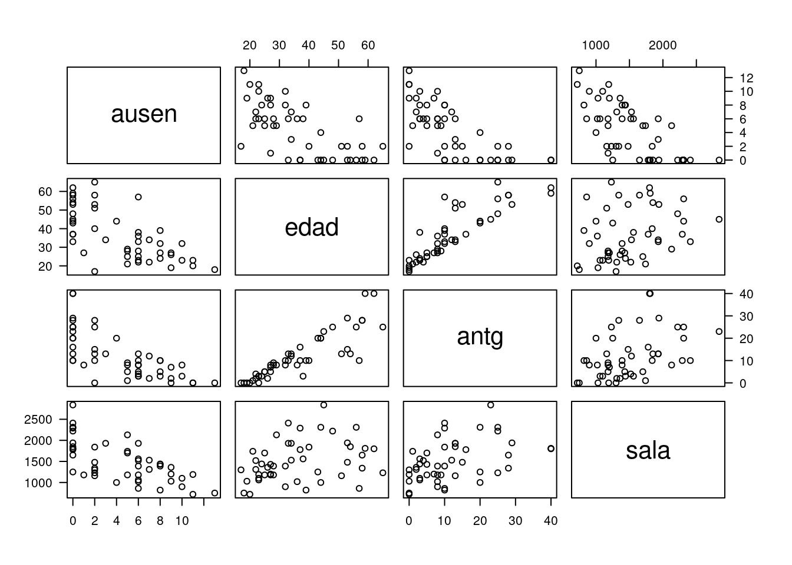

La correlación entre dos variables es un concepto fundamental en ciencia de datos, pues permite medir el grado de asociación que entre un par de variables que permite la identificación de patrones, tendencias y asociaciones en conjunto de datos. Permite identifica las relaciones a traves de los cambios que se producen o no sobre una variables cuando otra cambia.
La magnitud de este indicador es numérico y dependiendo las características de las variables (tipo y escala de medición) son utilizados diversos coeficientes como son:
Coeficiente de Correlación de Pearson : Mide la relación lineal entre dos variables continuas. Varía entre -1 y 1, con 0 indicando una correlación nula.
Coeficiente de Correlación de Spearman: o correlación de rango de Spearman, se utiliza para medir la relación entre dos variables en escalas de intervalo, principalmente producidas por la cuantificación de un cuestionario que mide una caracteristica cualitativa a traves de la suma de puntuaciones obtenidas de las respuestas dadas. Utilizan los rangos de los valores para calcular la correlación.
Coeficiente de Correlación de Kendall: es similar al coeficiente de Spearman, mide la concordancia entre las clasificaciones de dos variables, independientemente del valor numérico absoluto.
Coeficiente de Correlación Parcial : Utilizado para medir la relación entre dos variables después de haber eliminado el efecto de otras variables relacionadas, lo que permite examinar la asociación única entre esas dos variables.
Coeficiente de Concordancia: Usado para medir la similitud o acuerdo entre dos clasificadores o evaluadores en relación con una variable categórica.
Coeficiente de Asociación: En el contexto de tablas de contingencia, como las utilizadas en análisis de datos categóricos, este coeficiente mide la asociación o dependencia entre dos variables categóricas.
Coeficiente de Incluido de Goodman y Kruskal : Utilizado para medir la fuerza y dirección de la asociación entre dos variables categóricas ordinales.
Inicialmente, puede ser útil realizar chequeo gráfico de la naturaleza y la fuerza de las asociaciones entre las variables predictoras con la variable respuesta, y aún entre predictoras.
Una matriz de gráficas de dispersión es la herramienta más útil para visualizar rápida y simultáneamente estas relaciones. Si las variables predictoras se asocian linealmente a la variable respuesta, los gráficos de dispersión respectivos deben presentar las nubes de puntos tendiendo a una línea recta. También se puede chequear si existen relaciones de tipo no lineal entre las distintas variables, y la presencia de observaciones atípicas.
Por otra parte, se espera que entre las predictoras no existan relaciones lineales fuertes (\(\rho=0\)), pues de lo contrario, habría información que podría ser redundante en el modelo, y se tendría un problema de multicolinealidad, lo cuál se estudiará en mayor detalle más adelante en la asignatura. El coeficiente de correlación permite medir la intensidad de la relación lineal que existe entre las variables independientes.
Es útil también acompañar este análisis gráfico con la matriz de correlaciones de las variables del modelo, la cual muestra los coeficientes de correlación entre la variable respuesta con cada una de las predictoras y también todas las correlaciones entre las predictoras.
En la siguiente figura se presentan algunas matrices de gráficos de dispersión para un conjunto de datos sobre tres variables y su prelación con la variable dependiente.
La base ausentismo contenida en paqueteMOD contiene las variables
El diagrama de dispersión permite visualizar la relación lineal que puede existir entre dos variables numéticas, para ello se construye la siguiente matriz de diagramas.

Diagrama de dispersiónEste diagrama permite visualizar la fuerte relación que existe entre las variables edad y antigüedad, es decir que estas dos variables no son independientes y podrían generar problema en el momento que las integremos a un mismo modelo como se verá más adelante.
ausen edad antg sala
ausen 1.000 -0.675 -0.715 -0.667
edad -0.675 1.000 0.872 0.316
antg -0.715 0.872 1.000 0.439
sala -0.667 0.316 0.439 1.000La información contenida en la matriz de correlaciones permite valorar la magnitud relación lineal entre las variables y el sentido de la misma. \(\widehat{\rho}_{_{\text{edad, antg}}} = 0.872\), lo que indica que a mayor edad, más antigüedad
Se puede observar que la mayor relación de la variable \(y\) (ausen) con alguna de las variables independientes es con antg (antigüedad en la empresa) y tiene signo negativo lo cual indica que los empleados mas antiguo tienen menos ausentismo, de igual manera que las variables edad y salario.
También es importante notar que entre las variables independientes existen fuertes correlaciones, lo cual puede generar problemas en la estimación del modelo y su inferencia. Este tema (multicolinealidad) será abordado más adelante.
Las variables denominadas independientes deben de ser independientes unas de otras, por tanto sus correlaciones deberán ser no significativas al realizar pruebas de hipótesis ( \(Ho: \rho = 0\)).
En caso de haber una relación perfecta entre dos variables regresoras (\(X_{1} = aX_{2}\)), el método MCO no tendrá solución (problema de la multicolinealidad perfecta).